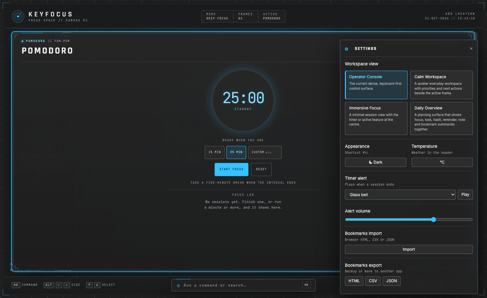
Settings Panel
View picker and global preferences.
Keyfocus · terminology draft 01
A visual inventory of the four workspace views and the common controls around them. The numbers on each screenshot point to the matching names below.
Scope: these screenshots show the four views plus Settings, Music Options and the command palette. No reminder was due during capture, so reminder notices and undo notices are named in the shared glossary but are not shown in a fabricated state. The same Notice component supports persistent and temporary presentation, placement, tone, dismissal behavior and accessibility announcements.
View 01
Dense three-side workspace
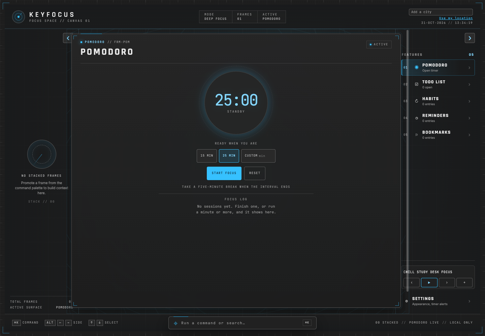
1234567View 02
Navigation, active work and context
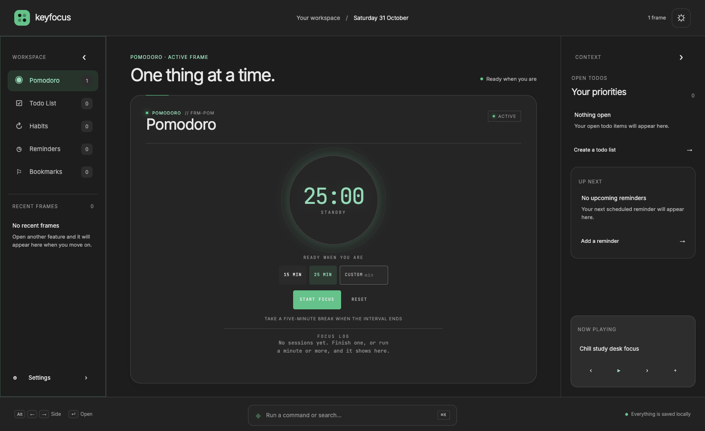
12345678View 03
Central session with compact navigation
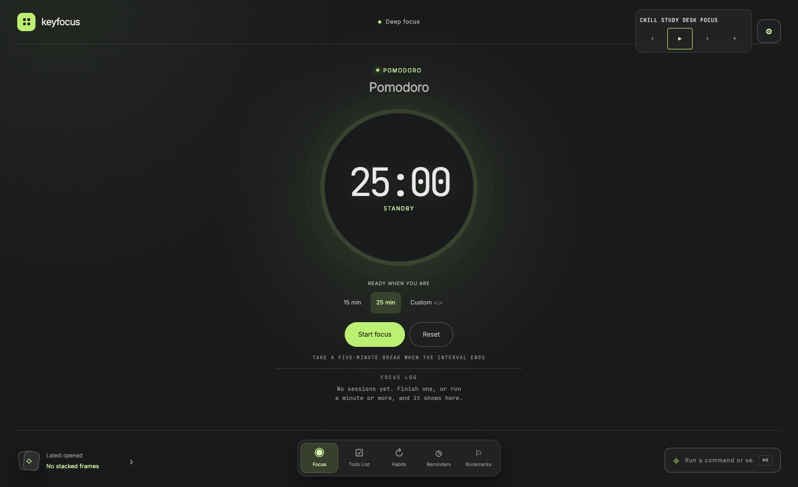
1234567View 04
Planning dashboard of real feature summaries
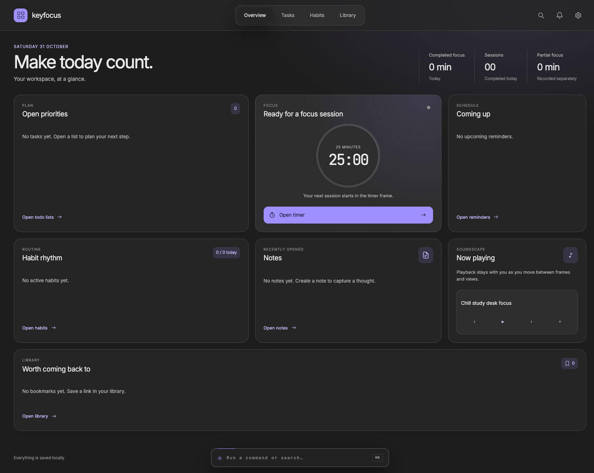
1234567891011The app keeps the same underlying workspace as the presentation changes. These names can be used in future design notes and issues.
| Term | Use it for | Current labels you may see |
|---|---|---|
| Workspace | The whole Keyfocus working environment: frames, navigation, command access and global controls. | “Your workspace”, “Focus space” |
| Workspace View | One of the four layouts applied to the same workspace state. | Operator Console, Calm Workspace, Immersive Focus, Daily Overview |
| Feature | A tool category that can have a frame, such as Pomodoro, Todo List, Habits, Reminders, Bookmarks or Notes. | “Features”, “Tasks”, “Library” |
| Frame | A persistent instance of a feature. It keeps its title and feature data when it leaves the active position. | “Frame”, “Recent frame”, “Latest opened” |
| Active Frame | The single frame currently shown as the main editing surface. | “Active”, “Active frame”, “Focus surface” |
| Stack | The recency-ordered frames behind the active frame. Choosing one promotes it. | “Latest frames”, “Recent frames”, “Latest opened” |
| Feature Navigation | Controls that open or promote feature frames. Use this general term across layouts. | Feature Dock, Calm sidebar, Overview Navigation |
| Context Panel | Calm Workspace’s derived priorities, reminders and playback information. | “Context”, “Your priorities”, “Up next” |
| Overview Card | A read-only summary tile in Daily Overview, with a route to the real feature. | Open priorities, Pomodoro timer, Habit rhythm, Notes, Now playing, Bookmarks |
| Command Bar | The persistent text/button control that opens commands and search. | “Run a command or search…” |
| Command Palette | The menu opened by the Command Bar or ⌘K; it offers create/open/search actions. | “Create or search”, command rows |
| Workspace Settings Panel | The panel for workspace view, appearance, timer alert and bookmark import/export preferences. | “Settings” |
| Notice | The shared component for short messages with optional actions. Props configure presentation, placement, tone, lifetime, dismissal and screen-reader announcement. | Reminder notice, undo notice, overdue notice |
| Empty State | Explanatory content shown when a stack, list, summary or history has no entries. | “No recent frames”, “No tasks yet”, “No sessions yet” |
Use the component term as the umbrella name; use the specific label for the named UI piece.
| Shared component / surface | Configuration / item | Purpose / distinction |
|---|---|---|
| Notice | Persistent reminder notice | presentation="banner", no auto-dismiss duration, top placement, actions for Done/Snooze/Dismiss, assertive announcement. |
| Notice | Undo notice | presentation="toast", five-second duration, bottom placement, polite announcement and an Undo action. |
| Notice | Overdue notice | presentation="banner", persistent until dismissed, below-header placement, warning tone and polite announcement. |
| Notice | Inline habit undo notice | presentation="inline", five-second duration, polite announcement and an Undo action. |
| Notice announcement | Polite or assertive | Accessibility behavior configured separately from how the notice looks. “Alert” is the assertive announcement setting, not a separate visual component. |
| Popover | Music Options; Focus Log Chart | Anchored floating panel for music controls, or a chart and heat map from Focus Log. |
| Menu | Command Palette | Keyboard-navigable command/search choices; keep “palette” as its product name. |
| Selection Panel | Feature / Frame Picker | Offers existing frames or creation when a feature supports multiple frames. |
| Settings Panel | Workspace Settings | View choice and global preferences. It is a tall panel, distinct from a small popover. |
| Dialog | Feature dialogs / confirmation surfaces | Focused interaction that temporarily takes precedence over the workspace. |
| Disclosure | Latest Opened, collapsed rails, grouped content | Expands or collapses content in place without opening a separate floating surface. |
These show how shared controls are placed in each view. Select a view to expand its screenshots.

View picker and global preferences.
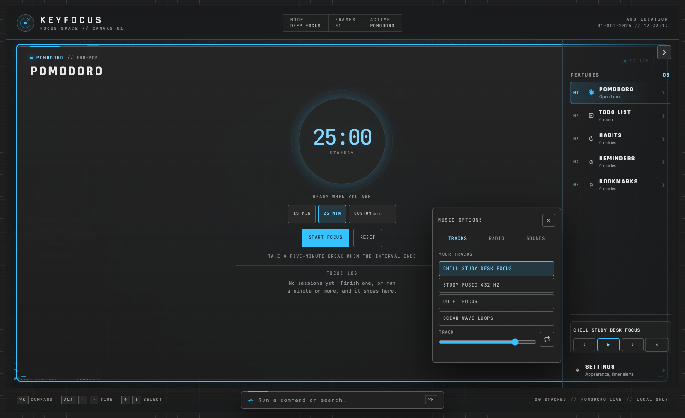
Player track, radio and sound controls.
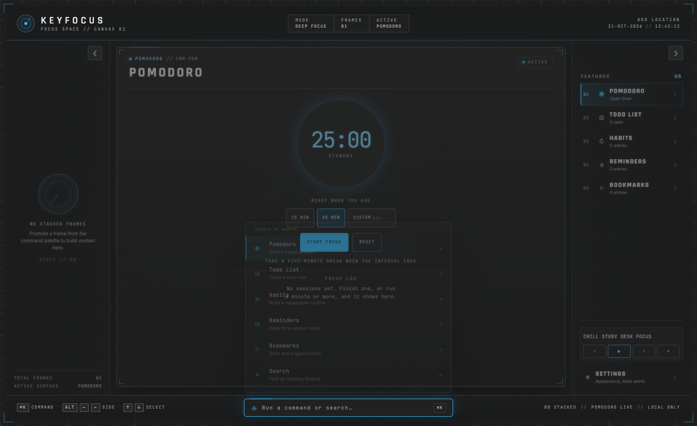
Keyboard command and search menu.
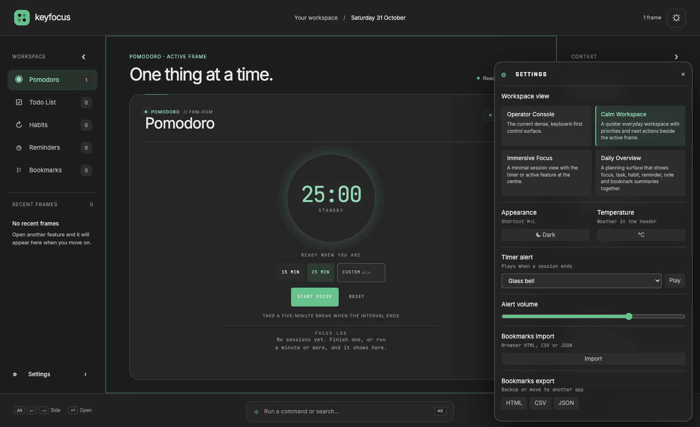
View picker and global preferences.
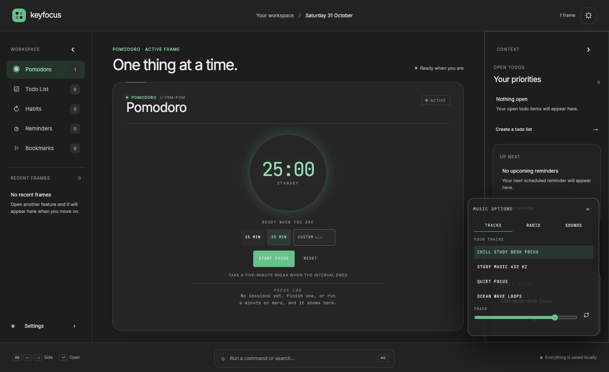
Anchored near the context panel’s player.
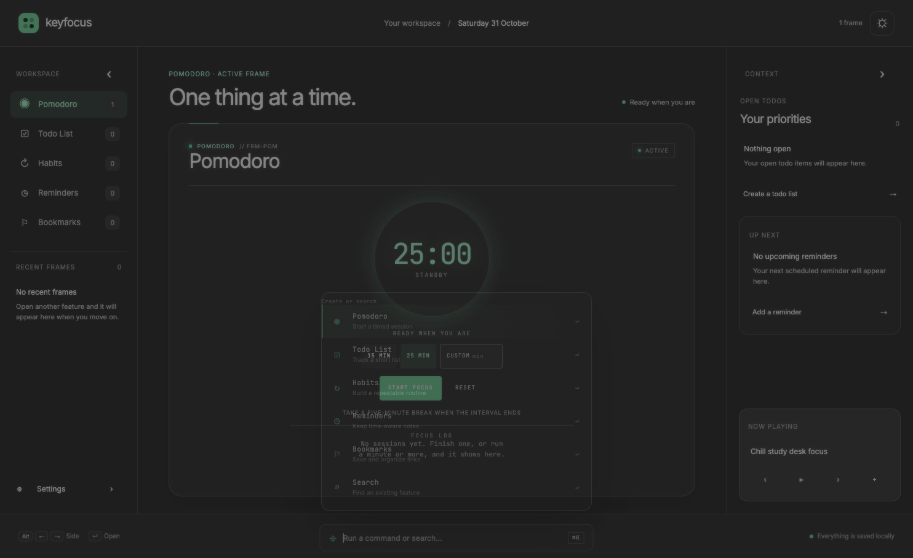
Keyboard command and search menu.
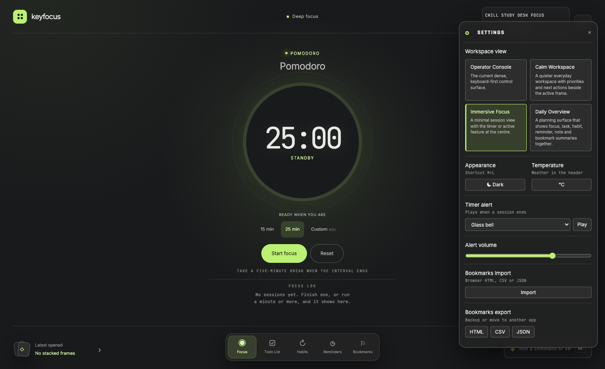
View picker and global preferences.
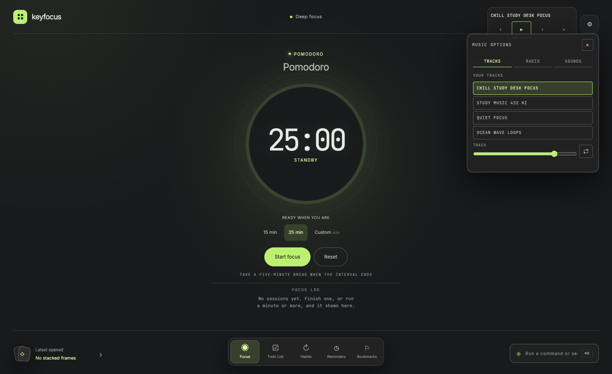
Anchored in the compact top-right player area.
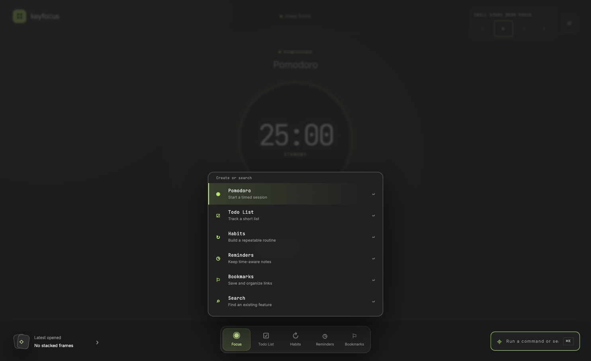
Keyboard command and search menu.
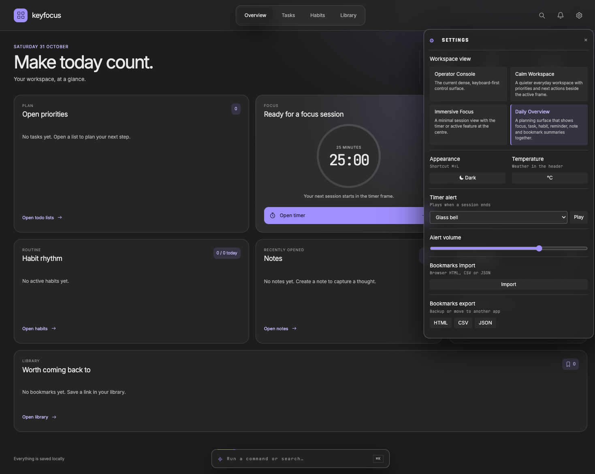
View picker and global preferences.
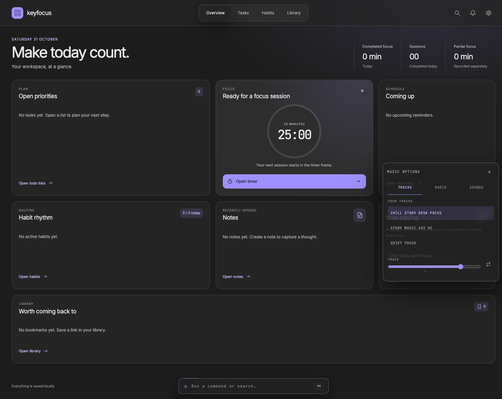
Anchored to the Now Playing overview card.
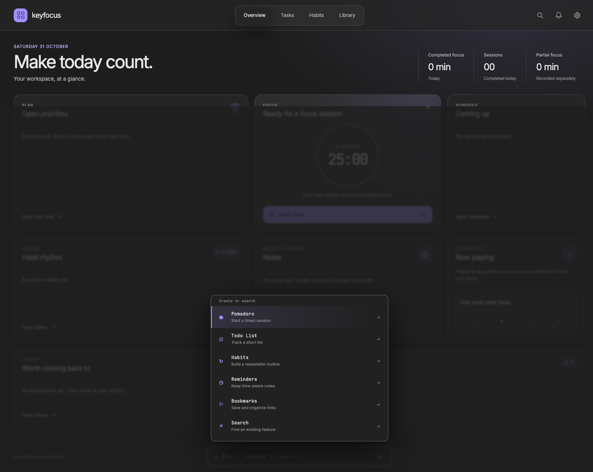
Keyboard command and search menu.
These names apply to the active frame in all layouts. The screenshot set uses Pomodoro as the active frame; each other feature supplies its own controls inside the same frame boundary.
| Feature frame | Items inside the frame |
|---|---|
| Pomodoro | Frame Header, frame title, active status, Timer Dial, timer state, duration presets, custom duration field, primary action, reset action, break hint, Focus Log and Focus Log Chart. |
| Todo List | List Header, quick-add field, task rows, priority and due-date markers, filters, sort controls, completion progress and list actions. |
| Habits | Habit list, weekly target/progress, day check-ins, archive controls and history/heat map. |
| Reminders | Quick-add field and interpreted preview, reminder groups, reminder row, repeat details, snooze actions and Done history. |
| Bookmarks | Bookmark list, saved-link row, add/import/export controls and metadata. |
| Notes | Note title/frame header, block editor, block tools and local autosave hint. |
| Focus Music | Global player controls and Music Options; playback stays global when the active frame or workspace view changes. |
announcement="assertive" when it must be announced as an alert.